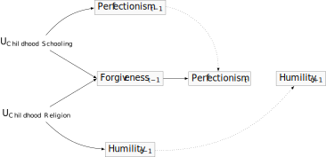
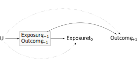
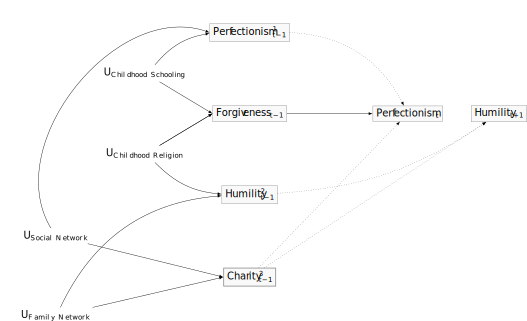

![]()
Summary
- Researchers may accidentally induce confounding by over-adjustment.
- M-bias occurs from the over-adjustment of baseline indicators.
- Only a slight modification in the assumptions of the M-bias graph implies intractable confounding.
- Three waves of panel data that include indicators at baseline both for the exposure and the outcome point to a way out of intractable confounding.
- Causal diagrams help researchers to clarify causal assumptions, however, to address the causal crisis in observational psychological science researchers require repeated-measures data.
Assumptions
- You are interested in psychological science.
- You have some familiarity with causal diagrams.
- You want to understand better how to select covariates to control for confounding to identify causal effects from statistical associations in observational data.
Review
Elsewhere, we have described our strategy for using three waves of panel data to identify causal effects. For confounding control, we adopt a modified disjunctive cause criterion:
control for each covariate that is a cause of the exposure, or of the outcome, or of both; exclude from this set any variable known to be an instrumental variable; and include as a covariate any proxy for an unmeasured variable that is a common cause of both the exposure and the outcome (VanderWeele, Mathur, and Chen 2020, 441; VanderWeele 2019).
Such a criterion might appear to be too liberal. It might seem that we should instead select the minimum adjustment set of confounders necessary for confounding control. Of course, the minimum adjustment set cannot generally be known. However, a liberal inclusion criterion would seem to invite confounding by over-conditioning. We next consider the risks of liberality in three-wave panel designs.
M-bias
Suppose we are interested in estimating the causal effect of perfectionism on humility. Suppose further that there is no causal relationship: if we were to intervene on someone’s perfectionism, we would not affect their humility. In Figure 1 we represent the absence of a causal association by omitting an arrow from perfectionism to humility.
Next, suppose that our statistical model conditions on forgiveness. Suppose further that childhood schooling was unmeasured and affects both forgiveness and perfectionism. Finally, consider that childhood religion was unmeasured and affects both forgiveness and humility. Under these assumptions, adjusting for forgiveness would open a backdoor path from perfectionism to humility. \[perfectionism \to childhood~chooling \to childhood~religion \to humility\] Figure 1 presents this type of over-adjustment bias, which is called M-Bias. Confounding arises by conditioning on forgiveness because forgiveness is a pre-treatment collider-confounder of childhood schooling and childhood religion. The statistical association in a model that includes forgiveness would be biased.

Over conditioning is understandably infuriating. Where \(A\) is an exposure, \(Y^a\) is a potential outcome and \(L\) is our pre-treatment collider, the world hands us:
\[ A \perp\!\!\!\perp Y^a\]
However the world also hands us:
\[A \not\!\perp\!\!\!\perp Y^a |L\]
In our quest for perfection, we stratified on forgiveness. Now we must ask for it!
Seemingly uncontrollable confounding
The solution to M-bias seems obvious. Do not condition on forgiveness. However, typically the data do not tell us the true structures of causal relationships. We must rely on assumptions. How would our problem change if, contrary to our previous assumptions, we were to assume that forgiveness causes (i.e. diminishes) perfectionism? Such an assumption would appear theoretically plausible. An intervention that caused me to be more forgiving of others might also cause me to be more forgiving of myself. A causal diagram that incorporates this new assumption is presented in Figure 2. Under our revised assumptions confounding appears unavoidable. As just discussed, if we were to adjust for forgiveness, we would induce confounding. However, if forgiveness affects perfectionism and we do not adjust for forgiveness an open path between the exposure and outcome remains:
\[perfectionism \to forgiveness \to childhood religion \to humility\].
It would seem taht whether or not we adjust for forgiveness we are humbled!

The modified disjunctive cause criterion provides a way out
Recall, we have not measured childhood schooling. Nor have we measured childhood religion. Had we measured either variable we could block the back door path from exposure to outcome. Yet there are other strategies at our disposal. The modified disjunctive criterion recommends that we “include as a covariate any proxy for an unmeasured variable that is a common cause of both the exposure and the outcome.”

Figure 3 clarifies how application of the modified disjunctive criterion may reduce or eliminate confounding. On this graph, \(L^1_{t-1}\) fully mediates the path from childhood schooling to perfectionism. If any variable corresponding to \(L^1_{t-1}\) were measured, including it in our model, along with indicators of forgiveness, would block the backdoor path from perfectionism to humility. Furthermore, on this graph, \(L^2_{t-1}\) fully mediates the path from childhood religion to humility. If any variable corresponding to \(L^2_{t-1}\) were measured, including it in our model would be sufficient to block a backdoor path from perfectionism to humility. Again, the causal structure of reality is unknown. However, by including in the set of measured confounders any \(l \in (L^1_{t-1} \lor L^2_{t-1})\), we may reduce or even eradicate confounding. We may adopt confounding control using proxies of unmeasured confounders.
The spectre of confounding remains
Consider how conditioning on many baseline confounders may open new opporunities for M-bias. Suppose that charity at baseline is not causally associated with either perfectionism or humility. Suppose further that there are common causes of charity, perfectionism, and humility, such as one’s social network and one’s family relationships as presented in Figure 4. Here, conditioning on charity would induce M-bias. If we are confident that charity does not meet the modified disjunctive criterion, then we should exclude charity from our model. However, we repeat our mantra: we cannot be certain any causal diagram reflects the causal structures of reality.
Application of the modified disjunctive criterion helps us use theory to develop strategies of confounding control. However we cannot escape theory. With this in mind, what if were to allow charity to affect perfectionism? We consider this question next.

Adjusting for both the exposure and outcome at baseline is a powerful strategy for confounding control.
VanderWeele and colleagues disuss reasons for including indicators for both the exposure and outcome at baseline when estimating causal effects (VanderWeele, Mathur, and Chen 2020) (see our application to New Zealand Attitudes and Values Study data here)
Our discussion of M-bias reveals additional reasons for including these indicators of exposure and outcome at baseline.

We have assumed that (unmeasured) childhood schooling causes perfectionism, the exposure. Notice that by including measures of the exposure at baseline, the effect of childhood schooling on perfectionism would need to be orthogonal to its effect at baseline.
Furthermore, we have assumed that (unmeasured) childhood religion causes humility, the outcome. Notice that by including measures of the outcome at baseline, the effect of childhood religion on humility would need to be orthogonal to its effect at baseline.
As shown in Figure 5, including measures for both the exposure and outcome at baseline provides a powerful check on unmeasured confounding. For unmeasured confounders to bias effect estimates their effects would need to arise subsequent to their effects on baseline measures.
Furthermore, the advantage of including baseline indicators both for the exposure and the outcome generalises to the problem of novel M-bias considered above and presented in Figure 4. As show in Figure 6, adjusting for baseline indicators both for the exposure and the outcome may dramatically reduce or eliminate novel M-bias.
Again we underscore the importance of longitudinal data in deploying effective confounding control: a strategy that includes baseline measures both for the exposure and the outcome requires collecting at least three waves of panel data.
When might adjusting for the baseline exposure and outcome be sufficient?
Figure 7 presents a model in which we only condition on baseline exposure and outcome. Given the lingering prospects for over-conditioning described in Figure 4, it is worth considering when we would be motivated to adjust for any indicators other than the baseline exposure and the baseline outcome.

Sometimes adjusting only for the baseline exposure and the baseline outcome will be sufficient to control confounding. However, we must again recall that we do not know generally know the causal structure of reality.
In Figure 8 we assume that charity at baseline might affect both the exposure, perfectionism, and humility, the outcome. Because the world is dynamic, such an effect might be orthogonal to pre-exposure perfectionism and pre-exposure humility. If such an effect occurs, including an indicator of charity at baseline will avoid confounding. Failing to do so will permit confounding. Merely including the baseline exposure and the baseline outcome would not be sufficient for confounding control.

The world is dynamic. Science learns it structure only slowly. The modified disjunctive criterion minimises reliance on any specific causal diagram. Furthermore, in the absence of randomisation, we cannot known whether any confounding control strategy was successful. For this reason, we recommend sensitivity analysis. In our research, we report E-values (VanderWeele and Ding 2017). We reserve discussion of sensitivity analysis, and of the virtues of E-values, for future reports.
The causal crisis in psychology cannot be fixed with graphs: needed are time series data.
To “control” for confounding psychological scientists often include many variables. There is growing awareness that including variables in one’s regression model may instead induce bias. Over-adjustment bias arises when we adjust for a mediator along the path from the exposure to an outcome. It also arises when we adjust for a common effect of exposure and an outcome, or post-treatment collider bias (J. Bulbulia et al. 2021). It is mediator and post-treatment collider bias that forms the focus of most recent treatments of confounding control. We discuss mediator and post-treatment collider biases in the context of treatment-confounder feedback.
It is with mediator and post-treatment collider bias in mind that many researchers advise parsimony in selecting variables for confounding control (McElreath 2020). Furthermore, freely available software assists researchers in the search for minimally sufficient adjustment sets (Barrett 2021). However, as we have been emphasising all along, scientists cannot generally know whether any assumed causal diagram reflects the true causal structure of reality. Put bluntly, our self-confidence will always be a poor instrument for science.
There is hope. With at least three waves of repeated measures data we may avoid the threat of over-adjustment bias from mediator and post-treatment collider confounding. The structure of times series data may require special methods (such as handling treatment-confounder feedback.) However, when variables are measured in time we can see, and avert, disasters. This is not the case when observational data are measured at one time point. And unless exposures are randomised, two time points will generally not improve our prospects for inference.
Three-wave longitudinal designs allow us to measure an outcome after an exposure, measure confounders before the exposure, and include in the set of confounders measured at baseline indicators both for the exposure and for the outcome. The time series allows us to preserve the temporal order needed to infer causal effects. By preserving this the order of time with our data we dramatically reduce the threats of mediator bias and post-treatment collider bias. For this reason, three waves longitudinal designs that include measures of the exposure and of the outcome at baseline allow researchers to include a richer set of confounders at baseline, reducing reliance on a correctly specified causal diagram. Although assumptions cannot be avoided, three waves of panel data allow us to relax the very strong assumptions about timing in the occurrence of outcome, exposure, and confounders that are needed for studies that measure people one or twice.
Here, we have considered the specific threats of pre-treatment biases. We have considered how a modified disjunctive cause criterion addresses such bias, and why the inclusion at baseline of indicators both for the exposure and the outcome is an especially powerful strategy for confounding control.
It is important that psychological scientists understand the importance of longitudinal data collection. Psychological science faces a casual crisis whose magnitude has yet to be fully appreciated (J. A. Bulbulia 2022). Causal diagrams help us to understand the crisis, however, the crisis will not be resolved with causal diagrams alone. With at at least three waves of repeated measures time-series data researchers may dramatically improve the quality of causal inference.
References
Reuse
Citation
@online{bulbulia2022,
author = {Joseph Bulbulia},
title = {M-Bias: {Confounding} {Control} {Using} {Three} {Waves} of
{Panel} {Data}},
date = {2022-11-22},
url = {https://go-bayes.github.io/b-causal/},
langid = {en}
}